Planning Context
어떤 기획이었나
- 툴팁은 여러 화면에서 반복 사용되기 때문에 정보량과 문구 구조가 흔들리면 전체 UX 품질이 떨어집니다.
- 시스템마다 설명 방식이 달라지면 개발/QA 확인 기준도 불명확해집니다.
ProjectN · Common UX
여러 시스템에 반복 적용되는 툴팁 구조, 정보량, 노출 기준을 정리한 공용 UX 사례입니다.
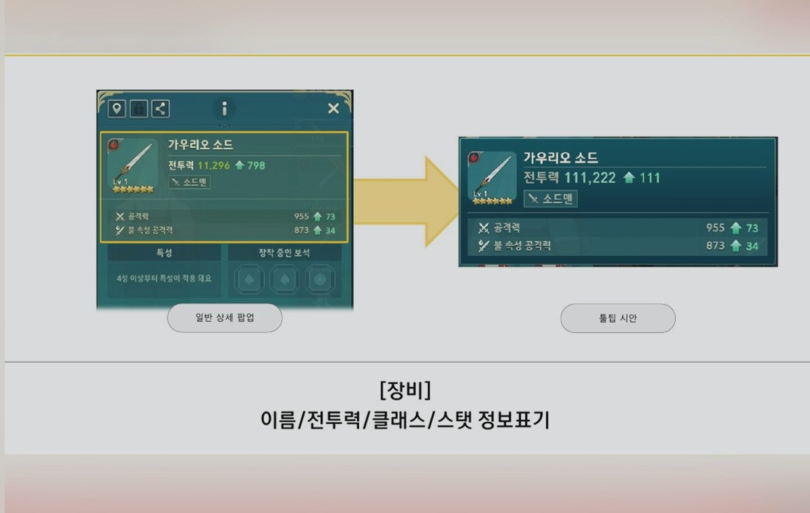
Planning Context
Process
Deliverables
Result
반복 사용되는 툴팁 UX를 공용 기준으로 정리해 화면별 설명 품질과 검수 기준을 맞췄습니다.
Deliverable Captures
원본 문서는 포함하지 않고, 포트폴리오 확인용으로 일부 페이지만 이미지화했습니다. 슬라이드 마스터/상하단 영역은 흐림 처리했습니다.
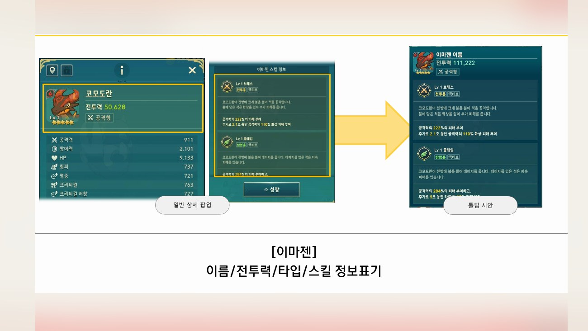
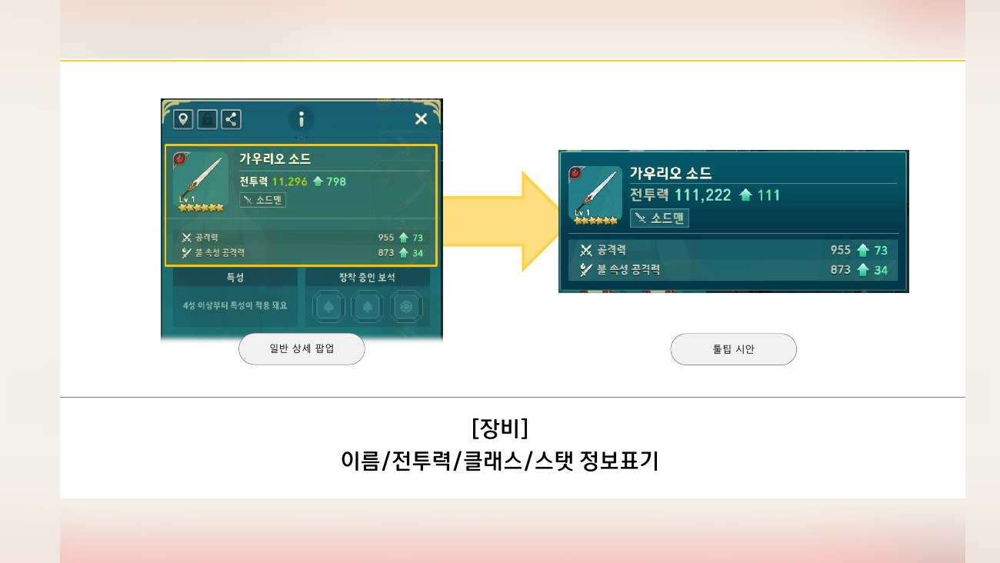
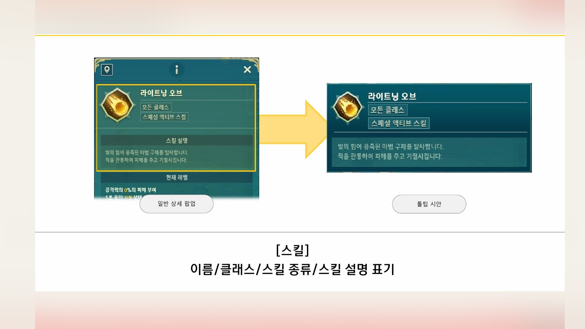
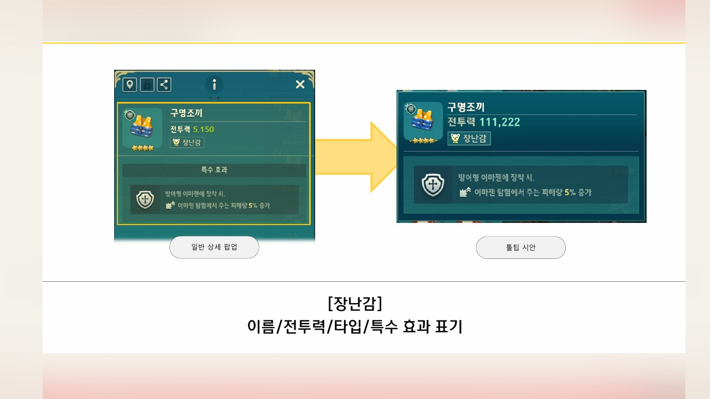
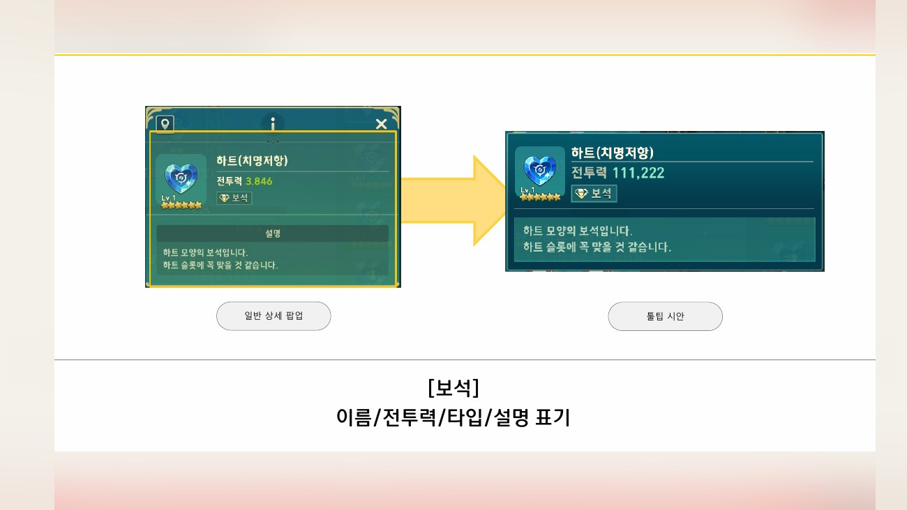
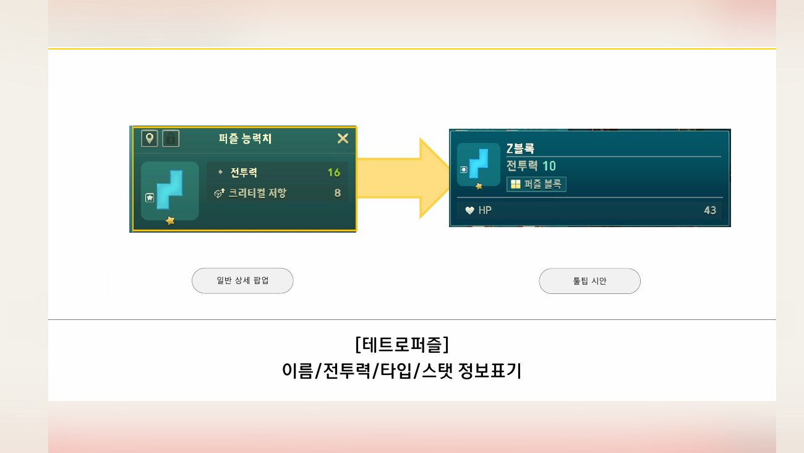
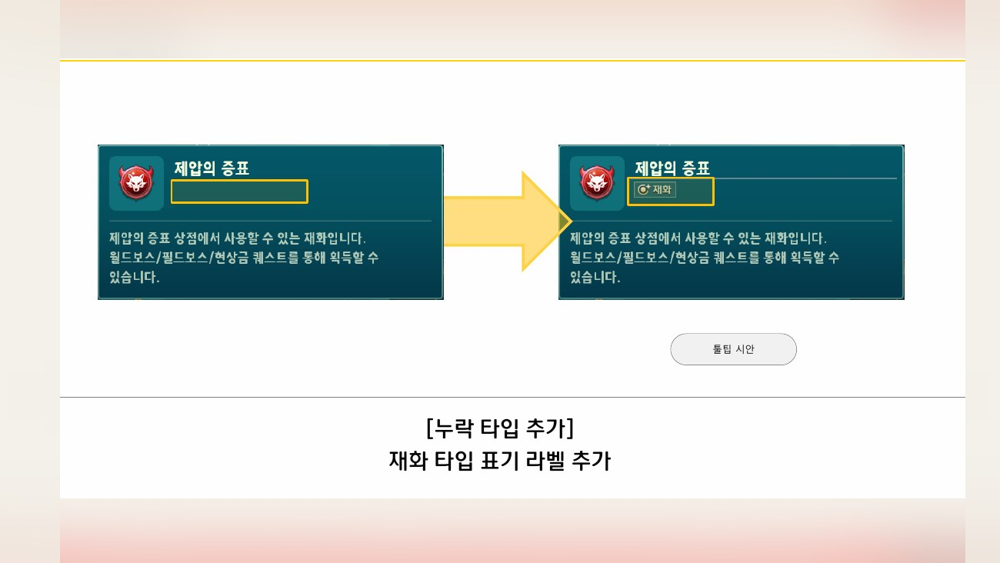
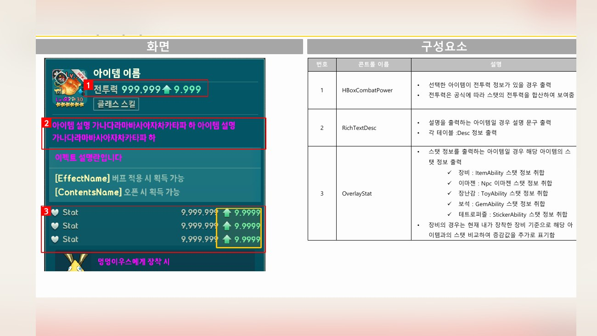
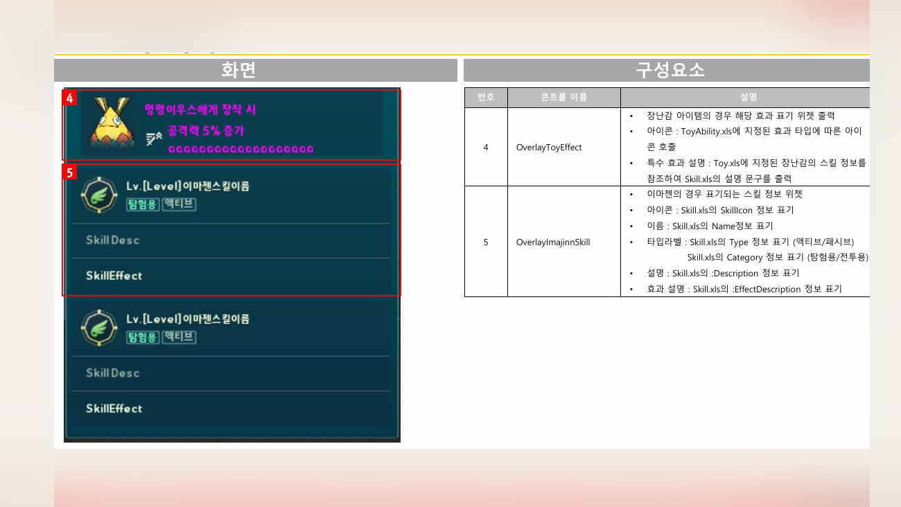
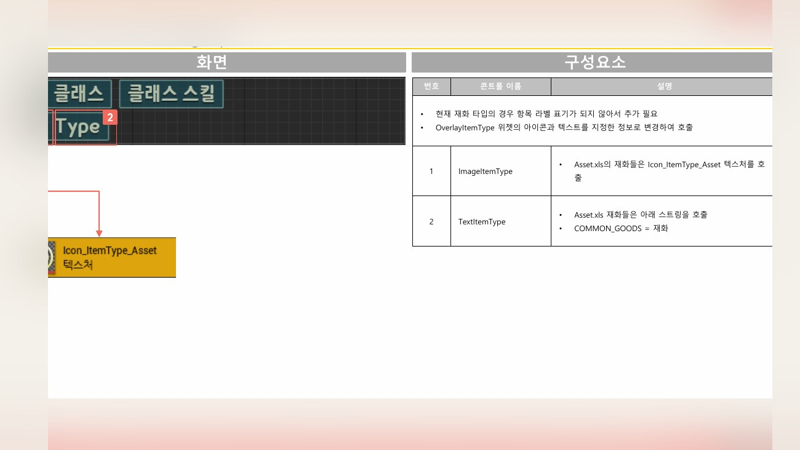